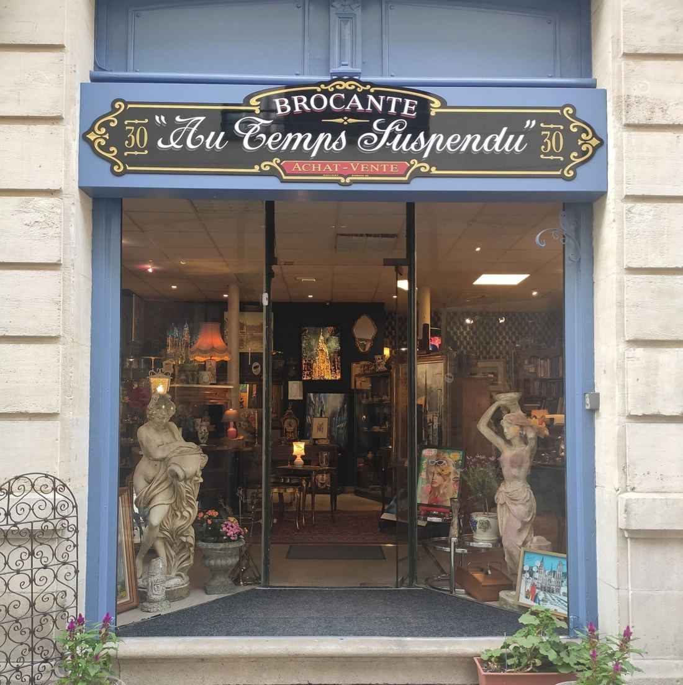
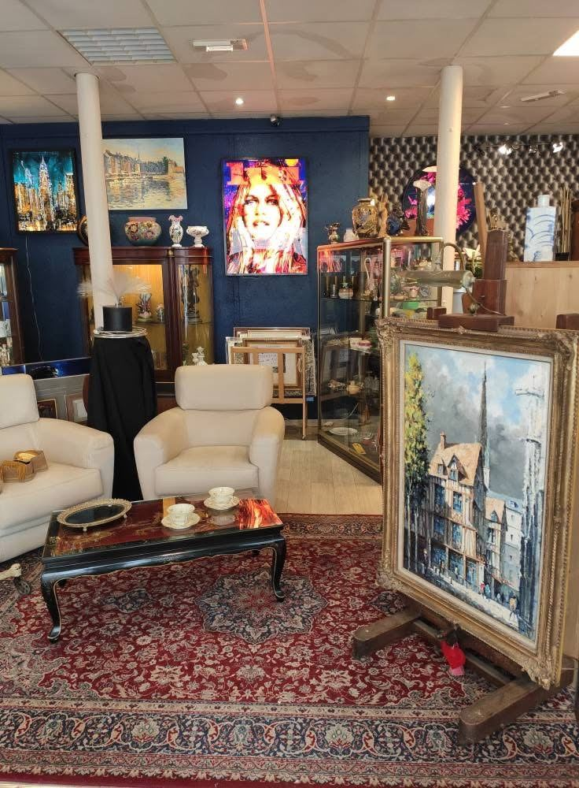
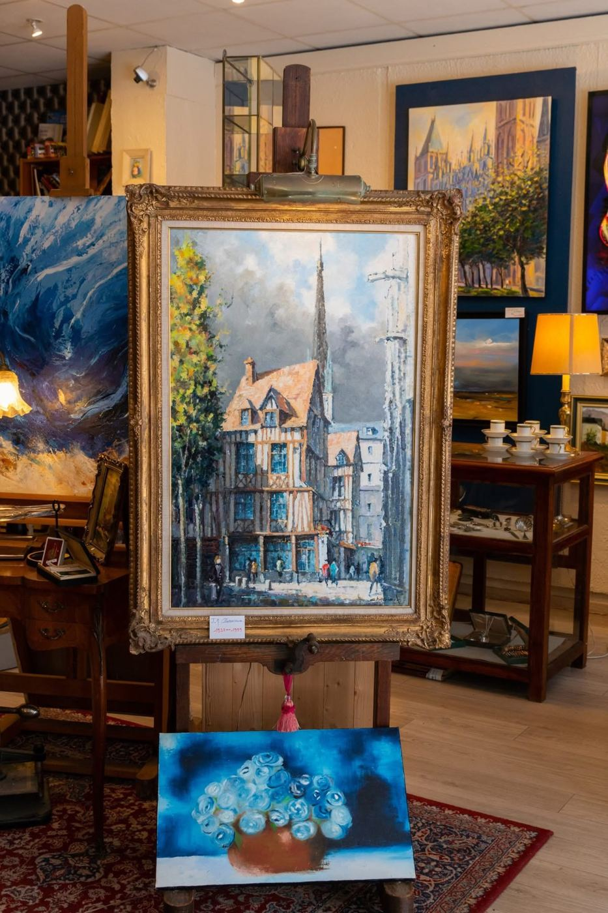
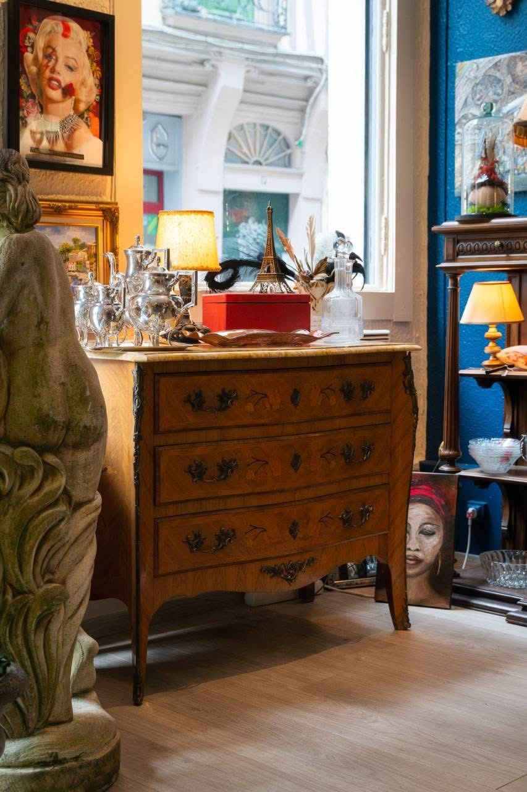
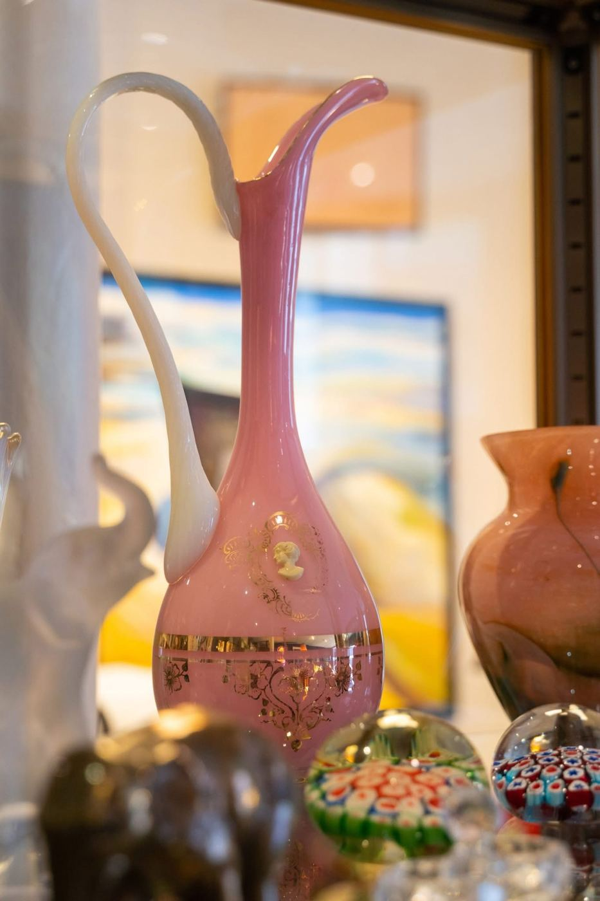
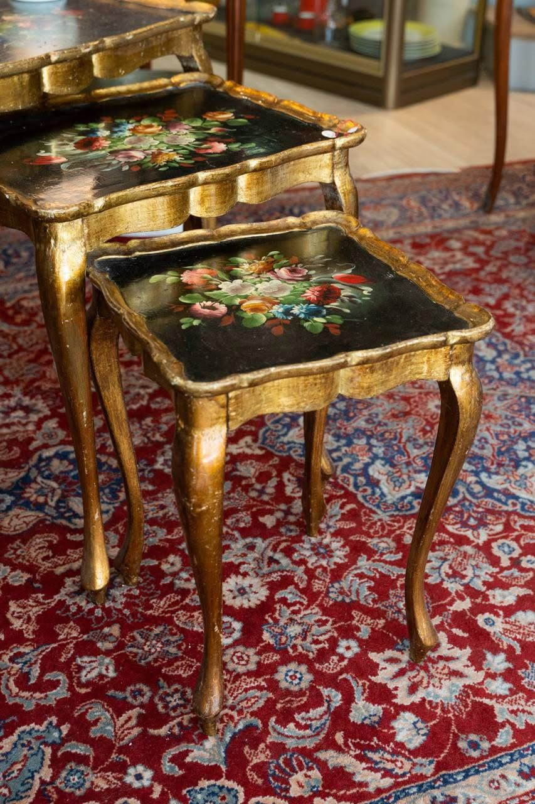
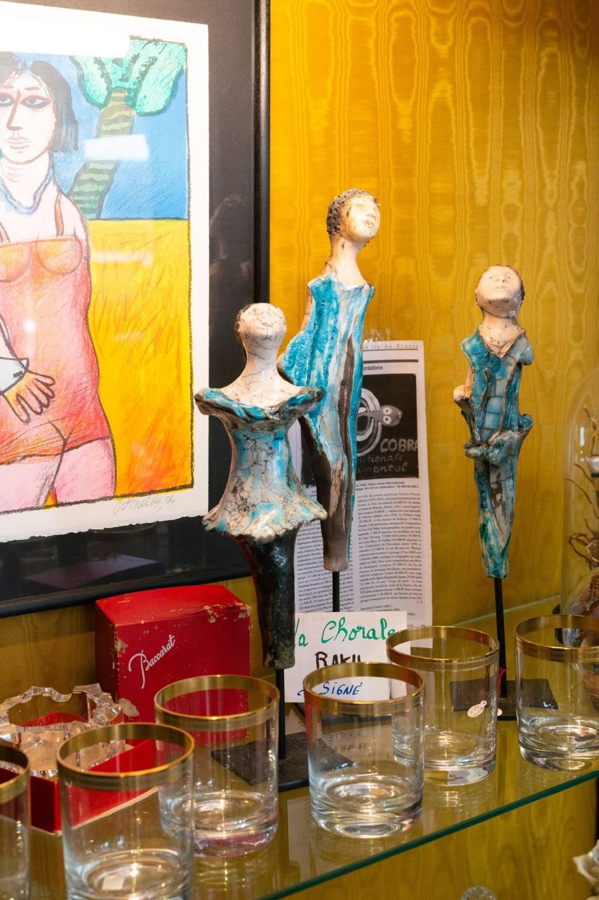
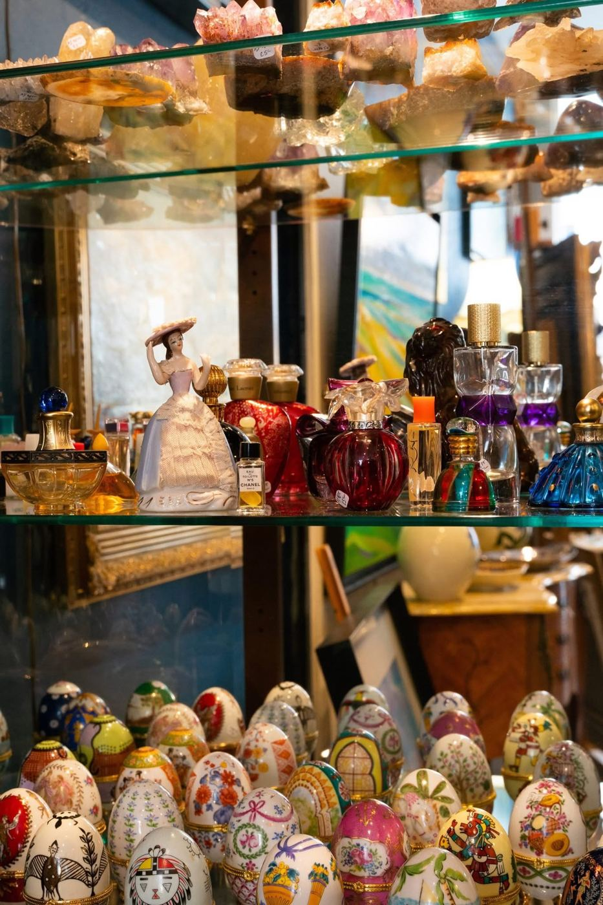
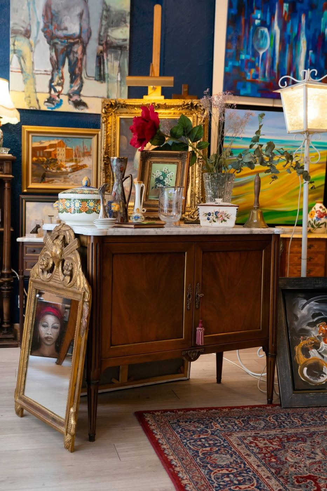

Brocante à Rouen : brocanteur, achat et revente d'objets anciens
Alexandre Jourdain est brocanteur à Rouen : il achète des meubles, de la vaisselle, des bibelots, des tableaux et des objets de collection, les trie et leur donne une seconde vie. Il se déplace en Seine-Maritime, dans l'Eure, dans les Yvelines et dans le Val-d'Oise pour voir les objets chez vous.
Qu'est-ce qu'un brocanteur ?
Un brocanteur achète des objets d'occasion ou anciens pour les revendre. Il connaît le marché, sait ce qui se vend et ce qui n'a plus de valeur. Alexandre regarde chaque meuble et chaque objet avant de décider de ce qui est racheté, revendu, donné ou évacué.
La boutique, au 30 rue aux Ours
Alexandre tient à Rouen la brocante « Au Temps Suspendu », en achat-vente : meubles anciens, tableaux, vaisselle, bibelots, minéraux et objets de décoration y sont exposés. Appelez avant de passer, pour être sûr de trouver Alexandre sur place.


Quels objets recherche Alexandre ?
- Meubles anciens : buffets, armoires, commodes, tables, chaises, fauteuils
- Vaisselle, faïence, porcelaine, verrerie et argenterie
- Tableaux, gravures, cadres et miroirs
- Pendules, horloges, lampes et luminaires
- Bibelots, objets de décoration et objets de collection
- Livres anciens, disques, jouets anciens et bijoux anciens
- Mobilier et objets de métier : enseignes, étagères, établis
Quelques objets de la boutique







Brocante et débarras : un seul interlocuteur
Beaucoup de brocanteurs achètent seulement quelques objets. Alexandre propose aussi le débarras de maison et le débarras d'entreprise : il vide, trie, met de côté ce qui a de la valeur et évacue le reste, en une seule intervention.
Vendre ses objets à un brocanteur
- Vous décrivez les objets ou vous envoyez des photos.
- Alexandre vous dit s'ils l'intéressent et vous annonce comment il procède.
- Pour un ensemble, il se déplace voir les objets sur place.
- Si sa proposition vous convient, il emporte les objets ; sinon, vous restez libre de refuser.
Pour comprendre ce qui donne de la valeur à un meuble : le rachat et l'estimation d'objets anciens.
Brocanteur, antiquaire, chineur : quelle différence ?
Les trois métiers sont proches mais ne font pas la même chose. Un brocanteur achète et revend des objets variés, un antiquaire se concentre sur des pièces plus anciennes et plus rares. Pour la comparaison complète, voir l'article brocanteur, antiquaire, chineur.
Parlons de votre projet
Décrivez le logement ou les objets, Alexandre vous rappelle pour fixer une visite.
Demander un devisQuestions fréquentes
Rachetez-vous tout type d'objet ancien ?
Alexandre regarde tout ce qui peut avoir une seconde vie. Il vous dit franchement quand un objet n'a pas de valeur de revente.
Peut-on faire estimer des objets sans rien vendre ?
Oui, vous pouvez demander son avis sans obligation de vendre.
Peut-on vendre un seul objet ?
Oui, il n'y a pas de minimum. Décrivez l'objet et envoyez une photo.
Alexandre se déplace-t-il chez les particuliers ?
Oui, en Seine-Maritime (76), dans l'Eure (27), dans les Yvelines (78) et dans le Val-d'Oise (95), surtout pour un ensemble de meubles ou un logement.
Un logement à vider ou des objets à faire estimer ?
Appelez Alexandre ou envoyez votre demande, il vous répond et organise une visite.